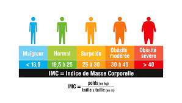

Santé
Calculez rapidement votre Indice de Masse Corporelle et découvrez votre catégorie de santé selon les normes de l'Organisation Mondiale de la Santé.
Saisissez votre taille et votre poids pour voir le résultat.

Fruits, légumes, protéines maigres et céréales complètes sont les piliers d'un poids sain.
30 minutes d'activité modérée par jour contribuent à maintenir un IMC optimal.
Boire 1,5 à 2 litres d'eau par jour favorise le métabolisme et la bonne santé générale.